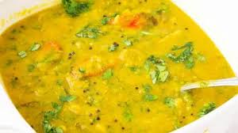

Daal

Description
What's bhaat without daal? Make this savoury dish right, and you'll be devouring several bowls and licking your fingers. I recommend adding tadka if you're normal and don't like bland food.
Ingredients
- Any type of daal
- Water
- Salt
- Chilli powder
- Garlic
- Oil
Steps
- Take two cups of daal and wash.
- Put in pressure cooker and add spices
- Mix thoroughly.
- Put on medium heat for 4 whistles.